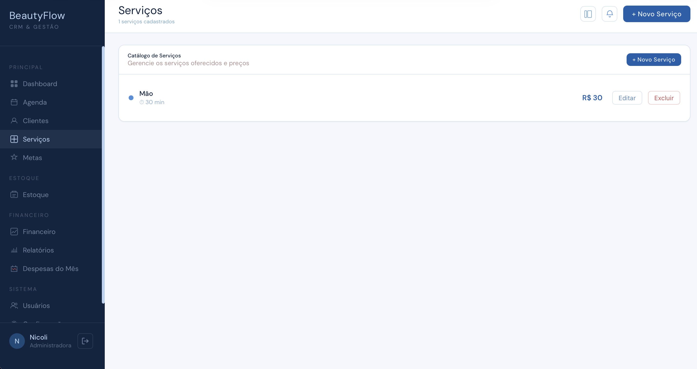
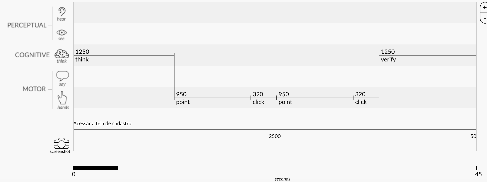
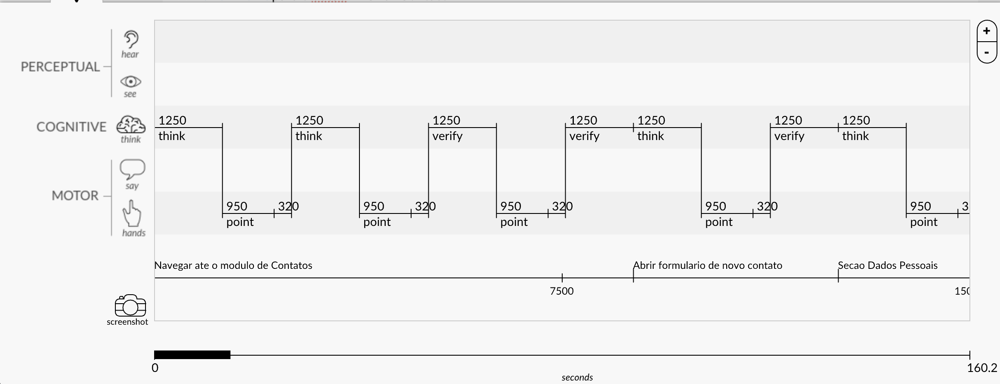

E nós decidimos ajudar a acender a luz.

Conheça a Beatriz
Beatriz é uma microempreendedora apaixonada pelo que faz. Dona de um salão de beleza, ela construiu seu negócio com dedicação e talento — mas enfrentava um desafio invisível.
Sem ferramentas adequadas de gestão, Beatriz não tinha visão real do seu próprio negócio. Não sabia exatamente quantos clientes atendia por mês, qual era seu ticket médio, quais serviços geravam mais receita, ou como estava seu fluxo financeiro.
Era como liderar no escuro. Andar sem saber para onde. E a nossa missão era mudar isso.

A conversa que mudou tudo
Nos reunimos com a Beatriz para entender de perto a realidade dela. Ouvimos suas dores, seus desafios do dia a dia e como ela gerenciava tudo sozinha — na agenda de papel, no caderno, na memória.
Foi nessa conversa que nasceu a ideia do BeautyFlow: um sistema feito sob medida para dar a ela a visão completa do seu negócio, de forma simples e acessível.
Cada funcionalidade que criamos veio direto das necessidades reais que a Beatriz compartilhou com a gente nesse encontro.
Nossa missão: dar visão ao negócio dela.
Visão Financeira
Controle de receita, despesas e lucro em tempo real.
Visão dos Clientes
Quem são, quando voltam e quanto gastam.
Visão de Metas
Definir e acompanhar metas mensais de faturamento.
Conheça o BeautyFlow
Um CRM completo de gestão, desenvolvido especialmente para dar visão e controle ao negócio da Beatriz. Cada funcionalidade foi pensada para resolver um problema real.
E muito mais funcionalidades
Cada módulo resolve um problema real do dia a dia.

Serviços
Catálogo com preço e duração de cada serviço oferecido.

Metas
Defina metas de faturamento e acompanhe o progresso em tempo real.

Estoque
Gestão de produtos com leitura de QR Code e código de barras.

Financeiro
Receita, despesas, lucro líquido e gráficos de desempenho.

Relatórios
Top clientes, serviços populares e mapa de calor de horários.

Despesas do Mês
Controle detalhado de despesas por categoria.

Nosso CRM (BeautyFlow)

CRM Normal
CRM Normal vs. BeautyFlow
Criamos um sistema focado em reduzir a carga cognitiva da nossa persona. Em comparação a um CRM convencional, a nossa solução elimina etapas desnecessárias, exibindo apenas as informações cruciais para a operação diária.
Comprovamos isso através de testes com o modelo Cogulator. A análise atesta que o BeautyFlow foi projetado para ser significativamente mais rápido e intuitivo, garantindo que a rotina agitada do salão não sofra com atritos na hora de agendar serviços.
QR Codes GS1 inteligentes
Usando o padrão GS1, criamos QR Codes que vão além da identificação de produtos — conectando o salão da Beatriz a uma experiência digital completa para seus clientes.

Check-in de Clientes
O cliente escaneia o QR Code ao chegar no salão e registra sua presença automaticamente no sistema, atualizando a agenda da Beatriz em tempo real.
Isso elimina a necessidade de atendimento na recepção apenas para confirmar a chegada, otimizando o tempo de todos.

Avaliação de Serviço
Após o atendimento, o cliente escaneia o QR Code para avaliar a experiência. As avaliações alimentam os relatórios de qualidade do salão instantaneamente.
Essa coleta de feedback sem atrito garante que o salão mantenha seu padrão de excelência e fidelize mais clientes.

Agendamento
Link direto para agendar um novo horário no salão. O cliente escolhe o serviço, o dia e a hora — tudo de forma autônoma pelo celular.
Esse QR Code pode ser divulgado nas redes sociais ou impresso em cartões de visita, facilitando a atração de novos agendamentos.

Produtos e Materiais (Baixa Automática)

Notas Fiscais (Entrada de Estoque)
Gestão de Estoque Inteligente
Código de Barras: Agilidade no dia a dia. Ao utilizar um produto no salão, basta bipar o código na embalagem para dar baixa automática no sistema, mantendo o inventário sempre real e atualizado.
QR Code de Nota Fiscal: Chegou mercadoria nova? Esqueça a digitação manual! Escaneie o QR Code da nota fiscal e o BeautyFlow fará a entrada automática de todos os produtos no estoque, otimizando o seu tempo e o controle financeiro do salão.